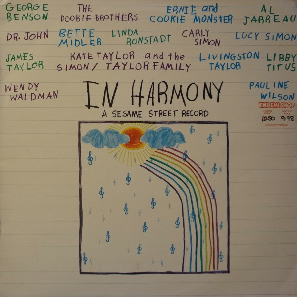

LP
In Harmony - A Sesame Street Record
Various
Media: — · Sleeve: —
—
Collection
Discogs SuggestedCA$57.22
Discogs MedianCA$57.22
Discogs HighCA$57.22
- Year
- 1980
- Label
- Warner Bros. Records
- Catalog #
- BSK 3481
- Country
- NZNew Zealand
- Genre / Style
- Rock, Funk / Soul, Pop, Children's